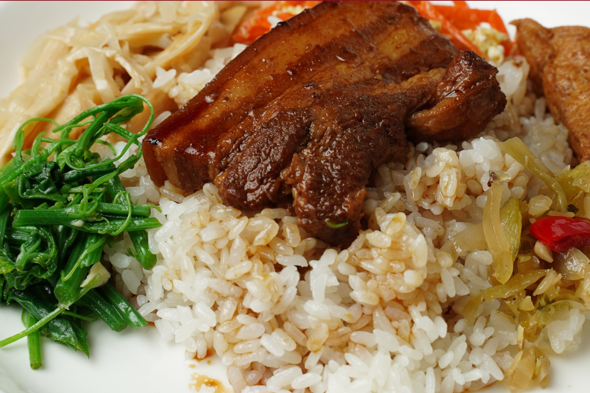
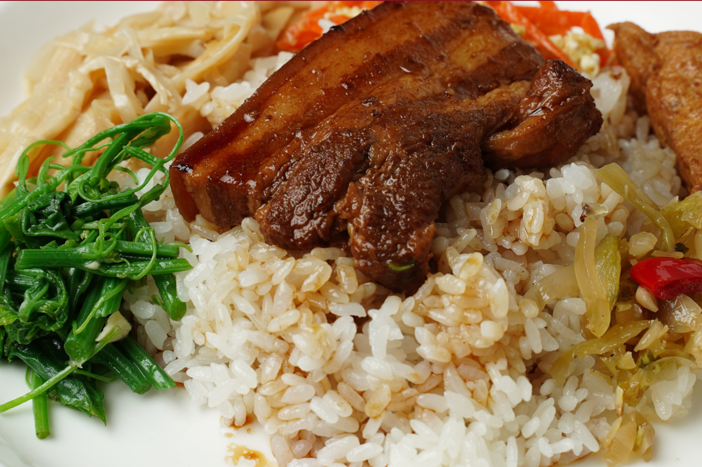

QUEM SOMOS
Somos o Appetyto, um restraurante familiar com pratos tradicionais e saborosos, com aquele toque especial de comida caseira! Servimos uma variedade de massas, molhos, saladas, sobremesas e acompanhamentos preparados com muito carinho e dedicação.
 

Estamos no mercado desde 1997, e por isso somos um dos restaurantes mais tradicionais da região. Nós somos também conhecidos como 'restaurante das panelas', pelo modo caseiro que servimos o nosso cardápio. O nosso objetivo é proporcionar para você um almoço preparado com carinho e principalmente qualidade no nosso atendimento!